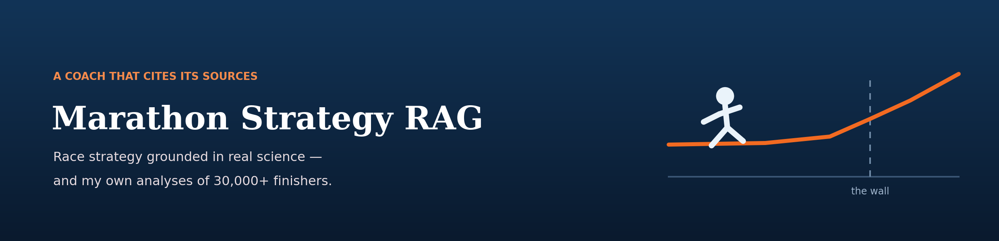
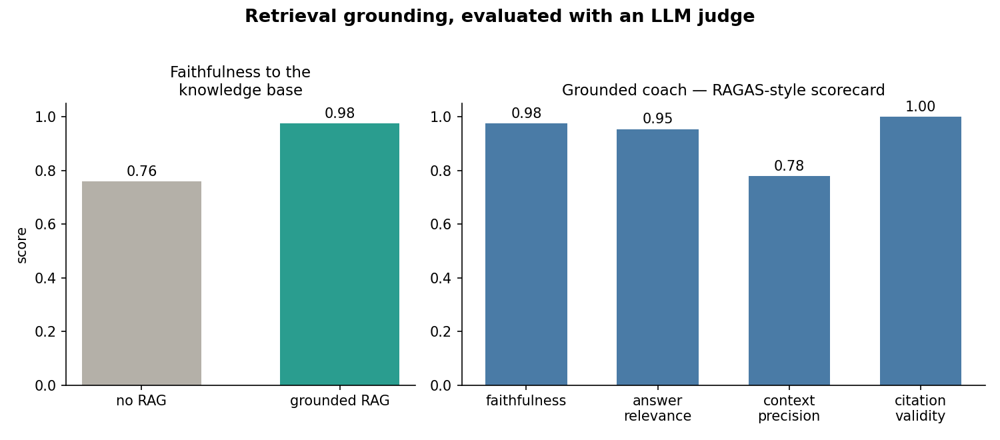
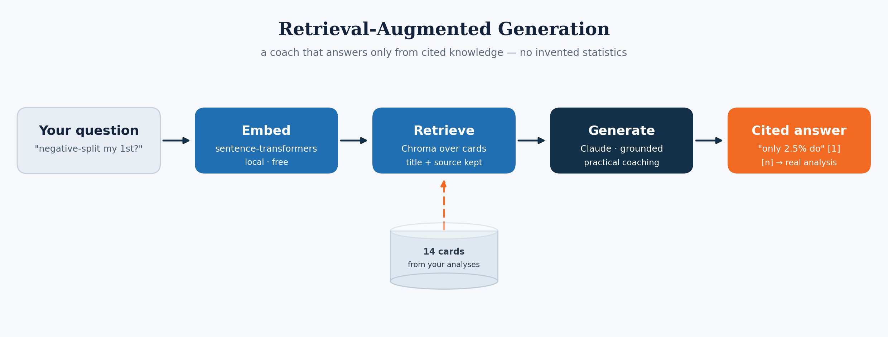

Negative-Split Myth
2.5% of 31,912 Boston finishers ran a true negative split. The coach uses this to steer people toward an even split instead.
Generic running advice is everywhere, and a bare LLM will invent numbers.
Ask a race-strategy question in plain English — "should I try to negative-split my first marathon?", "how much slower will 80°F make me?" — and get practical, cited advice from a curated knowledge base. Several of its cards are distilled from my own published analyses of 30,000+ Boston finishers, so when it says only 2.5% of runners negative-split, that figure has a repository behind it.

faithfulness for the grounded coach, against 0.76 for the same model with retrieval switched off.
citation validity. Every [n] points at a card that exists
and says what the answer claims it says.
answer relevance. Grounding did not come at the cost of answering the question asked.
context precision — the weakest number, and the one that says where the work is.
↓ the measurement
It is easy to build a RAG system and assert that retrieval makes it more
trustworthy. src/eval.py measures it RAGAS-style with an LLM
judge over a gold question set, comparing the grounded coach against the
identical model with no retrieval at all.
The gap is the whole argument: 0.98 against 0.76. The bare model is not catastrophically wrong, which is exactly what makes it dangerous — it is plausible three-quarters of the time and confidently fabricating the rest.

Context precision at 0.78 is the honest weak spot. Retrieval is pulling in cards that are not always the most relevant available, and the generation step is compensating. It is reported alongside the good numbers rather than omitted from the summary.
↓ the knowledge base
Most of what makes this coach worth asking is that a handful of its cards are not summarised from the internet. They are distilled from analyses I ran and published, each of which you can open and check:
2.5% of 31,912 Boston finishers ran a true negative split. The coach uses this to steer people toward an even split instead.
Pace inflects sharply at about 30 km, which is what makes early restraint the actionable advice.
About one minute slower per °F of race-day heat, across fourteen Bostons.
Boston and New York are the hardest Majors, by 101 and 78 seconds against Berlin.
About 67 seconds of the modern elite gain is footwear, not 3–5× the frequency the press reports.
Fuelling, tapering, carb-loading, hydration, pacing and hills, from the standard literature.

↓ what this cannot tell you
Faithfulness and relevance here are scored by a model, not by people. LLM judges are known to favour fluent, well-structured answers and to be inconsistent near the boundary. The 0.98 should be read as "the grounded system is substantially more faithful than the bare one," not as a precise quantity.
The knowledge base is also deliberately small and curated. That is what makes citation validity reach 1.00, and it also means the coach has a narrow competence. Ask it something outside the cards and the right behaviour is to decline, not to improvise.
Several cards are distilled from single-race analyses, so their caveats travel with them. Boston is a qualifying field on a distinctive course, and any advice derived from it inherits that.
Finish · what it is built on
sentence-transformers + Chroma, fully local and freeANTHROPIC_API_KEY switches to the APIsrc/eval.py, RAGAS-style with an LLM judge over a gold question setadjust node in the Marathon Training Plan Agent